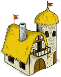

Tutoriales Aleatorios:
Estadísticas del FAQ
| Artículos: | 108 |
| Idiomas: | 49 |
| Artículos en total: | 5488 |
Noticias: Version T3.5 en camino
Algunos cambios deseados por mucho tiempo se avecinan, por favor leer aquí de que se tratan.
Saludos,
La Administración.
Saludos,
La Administración.
Residencia

La Residencia es un pequeño palacio, donde se alojan el rey o la reina cuando visitan la aldea. La Residencia proteje a la aldea de los enemigos que ...
Leer más...
Buscar
Configuración del FAQ